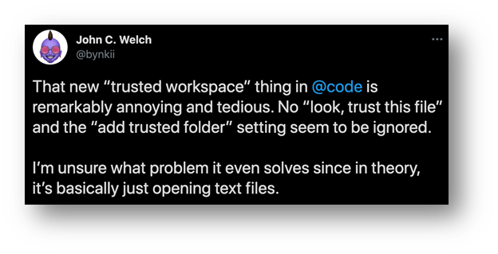

Workspace Trust
July 6, 2021 by Chris Dias, @chrisdias
Can I trust myself? This is the existential question facing many Visual Studio Code users since the 1.57 update.
While we can't answer that question for you, we can tell you more about why we've introduced the concept of Workspace Trust.
But first, a little background.
Cats and keyboards, and bad apples
The internet is full of happy things, like videos of cats typing on keyboards.
For developers, it's also full of tools, packages, and open source built by good people, who want to help you solve that problem you've been working on for hours. Development tools like VS Code integrate package managers, code linters, task runners, bundlers, etc. to provide enjoyable experiences that harness the power of the latest and greatest advancements from the ever-evolving community.
However, the productivity afforded by this rich ecosystem is often a result of the broad access we provide to our development machines. Combine that with the rapid evolution and viral sharing and consumption, developer tools are an appealing target for exploitation, especially considering attackers can use our machines to further spread attacks (for example, via auth tokens stored on developer machines or even through the software authored by the developer).
Being a developer is rewarding, but it's also a risky business. To contribute to a project, you inherently need to trust its authors because activities such as running npm install or make, building a Java or C# project, automated testing, or debugging, all mean that code from the project is executing on your computer.
Our goal with the Workspace Trust feature is to find the right balance, to be safe from the few "bad apples" who want to ruin it for everyone, while continuing to ensure we can have all the nice things that make development so much fun.
Hey, it's just an editor, right?

Yes, VS Code is an editor. However, like most modern editors, it is capable of running code from the workspace on your behalf to provide a richer development experience.
Running and debugging code is an obvious example. Code execution that may not be so obvious could be the preLaunchTask that runs before starting the app and can run a build that has an extra task executing arbitrary code unrelated to the build. What about the npm module that steals your crypto wallet private keys? Make a simple edit and a malicious linter is loaded from the node_modules folder, instead of the one that is installed globally. Even reading the code can be deceptive, attackers can use Unicode hacks to hide malicious code in plain sight. Heck, you don't even have to open any source code to be owned.
The intent here isn't to scare you away from all the great tools out there (including VS Code) or to make you change careers. It is to raise awareness that there are many attack opportunities when you download code from the internet written by a person or an organization that you don't have any type of trust relationship with.
Whack-a-Mole
In all the scenarios above, the tools are working as they were designed, and in non-nefarious code bases, they are extremely productive. Setting up a preLaunchTask to build the app before debugging is a great time saver as you don't have to manually build it from the terminal after every change. Linters are highly customizable to support every team's preferred coding guideline and style (yes, tabs vs. spaces). Pre-commit hooks let you check if you've forgotten something or to make sure tests run before committing.
Now, it is unlikely you would be subject to all these attacks at the same time. In fact, there has not (yet) been an exploit through VS Code because there is a great community of experts who have made us aware when new opportunities arise. Our approach, before Workspace Trust, was to address each scenario at the point of vulnerability with a localized permission prompt.
For example, the Jupyter extension warned users that embedded JavaScript can run when you open the visualizers in a Notebook:

The ESLint vulnerability was a doozy because it runs when the workspace loads (this was our first modal dialog).
This, it turns out, is a losing battle. Users are interrupted with multiple (and slightly different) permission prompts that don't apply to the entire workspace. I trust you, you, you, you, not you, and you, but only on Tuesdays. For us, it's a constant game of Whack-a-Mole, plugging each vulnerability as it is exposed with yet another prompt.
So, one of the patterns we follow when building VS Code is to look at what experiences are being implemented similarly but inconsistently across the tool and extensions, and see if we can bring it into the core. Trust prompting followed this pattern, so we decided to look at building an experience and API that both the tool and extensions could take advantage of, with a (hopefully) clearer user experience.
Trust
Now that you understand some of the various ways code can be run without you knowing, hopefully you have a better idea why we are asking this question up front.
We specifically ask if you trust the authors of this workspace because VS Code can't tell if the code is malicious or not (hey, we just know 1's and 0's), where it came from, if you intend to contribute to the project, etc.
You, on the other hand, are smart and you know where the code came from: you (ok), your company (probably ok), your buddy Kai (depends), or some random person on the internet (definitely not).
That knowledge helps make the tool smarter. If you trust the author, great! The tools and extensions have the green light to do their thing and provide a magical experience, and we're not going to bug you again.
If you don't, you are telling us be careful VS Code, don't execute any code. This is what we call Restricted Mode, where potentially harmful functionality is disabled so you can more safely browse the code and eventually make an informed decision.
But that dialog!
We hear you, the modal dialog is pretty big and it keeps coming up for every new folder you open, unless you take action to configure it.
We didn't start with this design. We looked at the ESLint modal dialog saga and asked ourselves if we could provide a non-blocking experience using visual clues and a single notification prompt that was delayed for as long as possible. We wanted to be unobtrusive, start in Restricted Mode (without you really noticing) and prompt for trust at the last moment.
We introduced a "passive" trust notification where you could tell us if you trusted the workspace. We cycled through various UI treatments to signal that the workspace was not trusted, including augmenting the Settings gear icon and introducing a new security icon.
If you use the Insiders builds, you will get the latest iterations on new experiences in VS Code like we're talking about with Workspace Trust. Insiders ships daily and we use it to build VS Code.
The idea being a user (you!) could decide, on your terms, when to grant or deny trust of the workspace. When the tool or an extension really needed access, only then would we then put up a notification asking if you trusted the workspace:
Now, I'm sure many of you will agree, VS Code suffers from a bit of what we call "Notification Fatigue" (I promise we are working on it 😊). In our testing, we saw that people simply ignored the notification. Users did not see the notification on the gear or even the new security icons. Usage data showed a very low rate of granting trust through the passive notification. In user studies, we watched people spend all their time thinking they had broken something, and then spend time troubleshooting, trying to get back to their expected state.
We intended to be unobtrusive and delay as long as possible, but the reality was that, while in Restricted Mode, the product felt broken, and people thought it was their fault. Not a great place to be for either of us.
Putting you in control
The decision to trust a folder has a fundamental impact on the capabilities of VS Code, so after all the research we decided the right thing was to ask the trust question right away when you try to open a folder. Because the modal dialog is disruptive, we try to balance things out by making the dialog powerful so that you could answer a couple of questions and in the end, see the prompt much less often in your day-to-day work.
From our own dogfooding as well as through interviews with other developers, we found that people generally have a primary folder where they put all their sources and consider it trustworthy. We therefore added the ability to trust the parent folder directly from the dialog. You can trust it and all the sub folders with one click and then you won't see the trust prompt again.
Workspace Trust editor
The Workspace Trust editor gives you additional control over what you trust and will be updated in the 1.58 release to make it easier to configure the feature to suit your needs.
And because you can customize the behavior, there are many ways to get to the Trust Editor 😊. Click the Restricted Mode Status bar message, the Manage link in the Restricted Mode banner, the Gear menu, or open the Command Palette (F1) and use the Workspaces: Manage Workspace Trust command.
From the Workspace Trust editor, you can trust the current folder, the parent folder (and all sub folders), as well as any folder on the machine.
You can also quickly jump to all the Workspace Trust settings to fine-tune the experience.
How we use Workspace Trust
Nobody likes flossing their teeth, but we do it anyway because we know it's the right thing to do. Nobody wants to think about security, but we also know it's the right thing to do. By customizing the experience, you can keep your development experience enjoyable while also protecting yourself against the threats inherent with development (fun flossing?!?).
Most people on the VS Code team start out with a top-level folder, where they work on sources they trust. For example, on my Mac, I put all the sources that I pull from the Microsoft organization on GitHub into my ~/src folder. I designate ~/src as a trusted folder and everything beneath it is inherently trusted. When I open ~/src/vscode or ~src/vscode-docker, etc., they are opened with full trust because I trust the code that my organization writes and consumes.
I've got a separate folder called ~/scratch (short for "scratchpad", you can make it whatever you want obviously), where I put everything else and assume it is untrusted by default. Then, I make trust decisions on a folder-by-folder basis.
To smooth my workflow, I have the "security.workspace.trust.startupPrompt" setting set to "never".
With this setting, I am not prompted by the modal dialog and the workspace opens directly in Restricted Mode. I've already decided that the ~src/scratch folder is untrusted, so there is no need to prompt me every time I open a subfolder. If I decide that I do trust the code I'm reading or writing, I can enable it on the folder with two quick clicks (the Restricted Mode notification across the top of VS Code, then the Trust button).
On my Windows machine, things are a little more interesting. I generally work in Ubuntu images running on the Windows Subsystem for Linux (WSL), using the WSL extension. I trust the ~/src folders on Linux and I trust the d:\src folder on the Windows side.
A few people on the team go one step further and turn off the Restricted Mode banner across the top as well ("security.workspace.trust.banner": "never"), leaving just the Status bar notification. For me this goes too far, the banner across the top keeps me honest and helps remind me to be vigilant when I am pulling from the internet.
Open source is awesome
We know that VS Code is a tool you use for getting your "real" job done, and any speed bumps or roadblocks we introduce only slow you down building and launching the next unicorn. Many of you took the time to reach out on Twitter, Reddit, and in issues, and we thank you for the candid feedback. We made a number of fixes and improvements coming in the 1.58 release based on your input and look forward to continuing the conversation.
Looking ahead, we want to help extension authors avoid arbitrary code execution and provide more functionality when running in Restricted Mode. Our Roadmap notes the work we are doing with the Visual Studio Marketplace team to bring additional security to the extension ecosystem (we call this "Trusted Extensions"), including validated publishers, signing, and platform-specific extensions. In short, you can think of Workspace Trust as helping good extensions make good decisions. Trusted Extensions will help protect you from bad extensions.
One of the benefits of building VS Code in the open is that the community can help us create the best possible experiences. So, please let us know how we can improve the flow, helping to keep you safe while being as unobtrusive as possible. Comment (politely!) on existing issues, submit a new one, or tweet us @code, we're listening!
Thanks,
Chris and the VS Code Team
Happy Coding (Safely)!